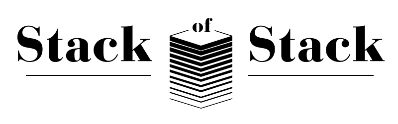

A curated list of the best curated lists 🫠
With by @ol_dl
+ Submit a stack
Load
Expected fields:
Name
,
URL
,
Category
,
Status
(alive/dead),
Thumbnail
(optional)
⚡
No stacks found
Try adjusting your search or filters.
Submit a Stack
×
Send
↑ Top